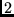

Next: 3 Quick overview
Up: SAM (Sequence Alignment and
Previous: 1 Introduction
Contents
Subsections
Information on previous versions follows the program descriptions.
See Section 11.5.
December 2001.
- Model libraries. Model libraries may now be specified and
scored with hmmscore. Each member of a model library is a set of
SAM settings, a model, and a model name. RDB files now always provide
model names. Model libraries can be calibrated (highly recommended)
as an option to hmmscore. See Section 10.2.9.
- The genseq program will generate random sequences based on
a regularizer or Dirichlet mixture regularizer. See Section 10.11.2.
- The makelogo program is a new viewing tool for SAM
models. See Section 10.9.3.
- The new get_fisher_scores outputs Fisher score vectors for
input to an external distriminitive learning program.
See Section 10.5.
- Posterior decoded alignment has been found to have a slight edge
over Viterbi alignment. However, the current implementation of this
algorithm requires a very large dynamic programming matrix that may
be beyond the memory limits of the platform. New to this version,
sequences that are too long for the posterior decoded alignment
calculation will be aligned to the model using the Viterbi algorithm.
See Section 10.1.
- Complex null models are no longer supported. An error in hmmscore that ignored user's null models has been fixed. See Section 10.2.
- The ability of hmmscore to read and sort score files,
undocumented for the last several versions, has been removed.
- The postscript header file used by drawmodel is now
produced directly by the program. The SAM_PS environment variable,
which previously indicated the location of the postscript header, has
been eliminated. See Section 10.9.1.
- For proteins, the recode4.20comp prior has been made an
internal default so that buildmodel will use it even without proper
setting of the PRIOR_PATH environment variable. See Section 8.1.1.
October 2000
- Null sequences are now properly scored and aligned by hmmscore and other programs. The buildmodel program
automatically removes null sequences from the training set.
See Section 7.3.
- In the hmmscore program, setting many_files to 
causes the score file to be printed to standard output rather than
to the normal .dist file, setting to
 causes .mstat files to be
printed to standard out, and to 6, both are sent to standard out with
undefined interleaving. This variable is treated as a binary
bit-vector, so setting to, for example, 3, will result in buildmodel generating many files and hmmscore sending .dist
output to standard output. See Section 10.2.2.
causes .mstat files to be
printed to standard out, and to 6, both are sent to standard out with
undefined interleaving. This variable is treated as a binary
bit-vector, so setting to, for example, 3, will result in buildmodel generating many files and hmmscore sending .dist
output to standard output. See Section 10.2.2.
- Martin Madera and Julian Gough have written a perl converter between
SAM and HMMer 2.0 formats that can be downloaded from the SAM WWW page
or, for the most up-to-date copy, from
http://www.mrc-lmb.cam.ac.uk/genomes/julian/convert/convert.html.
- Problems with Irix 64 distribution corrected.
July 2000
- Secondary structure alphabets based on DSSP labels. See Section 7.1.
- Multi-track HMMs. The hmmscore and align2model
programs can now make use of multi-track HMMs and sequences. For
example, a set of protein sequences with associated secondary
structure sequences can be scored or aligned to a protein
model with character emission probabilities calculated according to
the protein model and a second secondary structure model
(track). See Section 10.2.5.
- The predict_track program can be used to
make consensus predictions from a primary sequence alignment about a
secondary structure track. The program is experimental and not yet
fully optimized. See Section 10.8.
- The pathprobs program can be used to generate the
posterior probabilities of each character in an alignment given an
alignment and a model, in RDB format and (with reduced information)
a2m format. Changes to accommodate this format in prettyalign
mean that a2m files with compressed insertions (as generated by
prettyalign) will not be read as alignments. In general, prettyalign output should not be used as an input format.
See Section 10.7.
- The SAM-T99 target99 script now supports NCBI Blast 2 as
well as WU-Blast. SAM-T99 has been developed using WU-Blast; results
with Blast2 will differ slightly. See Section 4.
- An error that caused the regularizer_file to be read for
a user's null model rather than the nullmodel_file has been
fixed.
- Previous to this release, buildmodel local training
incorrectly always performed global alignment to a model with FIMs on
both ends. This has been corrected. To approximately duplicate
previous work with local training settings, use sw 3. See Section 10.3.1.
- Simple null model selection has been improved. If FIM tables
are automatically set (i.e., FIM_method_score is positive),
the null model emission probabilities correspond to that table,
whether or not any FIMs are present in the model. If it is negative,
the null model is taken from the specified source, and any
automatically-added FIMs are taken from that source as well. If it is
zero, the null model corresponds to the first FIM present in the
model, or to geometric average of the match states. The null model transition
probability is set according to the value of fimtrans. The
null model probabilities are affected by fimstrength whether or
not there are FIMs in the model. This eliminates the previous
inconsistencies that arose from using the first insert node as a null
model whether or not it was a FIM. SAM is now quite explicit when
insert/FIM tables are changed and when FIMs are added.
- The viterbi_threshold can be used with hmmscore to
prefilter sequences with a Viterbi NLL-NULL calculation before
performing the more expensive (and more sensitive) all-paths (EM
style) calculation. See Section 10.2.1.
- Previously, when E-values were calculated but a sequence did not
have a reverse-null-model score due to simple_theshold, the
E-value was calculated from the simple null model, leading to
incomparible E-values. Now, when the reverse score is not calculated,
the E-value is reported as the maximum possible E-value (database
size). See Section 10.2.1.
- SAM now includes a dedicated FASTA reader that is far quicker
than the more flexible readseq package. Sequence I/O, measured
by running checkseq, has been sped by a factor of 10. Sequence
memory use can be reduced by unsetting the keepannotations
parameter.
- Models can be created to enable hmmscore to perform Smith
& Waterman alignment and scoring. SAM will calculate E-values using
the reverse-sequence null model. See Section 10.2.7.
- Default value of segment_size has been increased from
100 to 1000 sequences so that
 0.5-1MB of protein sequence data
is in memory at any one time. For particularly long sequences, you
may wish to reduce.
0.5-1MB of protein sequence data
is in memory at any one time. For particularly long sequences, you
may wish to reduce.
- Addition of adpstyle, the dynamic programming style used
for alignments and multiple domain alignments. Posterior-decoded
alignment based solely on character emission posteriors is now
available. Scoring according to either posterior alignment option can
also be performed. See Section 10.1.
- Reoptimization of inner loop checkpoint placement. The default
setting of maxmem has been increased to use up to 20MB of memory
for dynamic programming.
 speedup for buildmodel
and sequence alignment. Posterior-decoded alignment does not yet use
reduced space.
speedup for buildmodel
and sequence alignment. Posterior-decoded alignment does not yet use
reduced space.
- Addition of the randseq program, which can be used to
randomly select sequences from a database, and splitseq which
can split a database according to sequence length (particularly useful
to filter sequences that can cause posterior-decoded alignment to run
out of memory).
See Section 10.11.4
and Section 10.11.5.
October 1999
- The SAM-T99 iterative method for remote homology detection.
This is the vastly preferred method for building an HMM from a single
protein sequence and for weighting sequences when an alignment is
available. See Section 4
and Section 9.4.3.
- Inclusion of the view_pdoc program for viewing the
posterior decoded alignment. This may assist in checking alternate
paths in an alignment. See Section 10.4.
- The uniqueseq program can now be used on alignments to
eliminate sequences that match other sequences in the alignment.
See Section 10.11.8.
- The hmmscore program will calculate E-values for
reverse-sequence null model scoring (scores better than 1e-300
are reported as 1e-300). Internal Z-scoring has been eliminated.
Score data can be output in the RDB format. See Section 10.2.
- Also in hmmscore, the reverse null model is now the
default null model calculation. This doubles runtime over the simple
null model, but is more accurate. To reduce this cost, set
simple_threshold to
 , which means that only sequences
that score better than this threshold will have the reverse null model
score calculated. See Section 10.2.
, which means that only sequences
that score better than this threshold will have the reverse null model
score calculated. See Section 10.2.
- The default null model (as well as all FIMs) now includes by
default a self-loop transition probability equal to the geometric
average of the match to match transitions in the HMM (fimtrans is 1.0). The way in which insert to insert arcs are set for
negative values of fimtrans has changed. See Section 8.5.
- Regardless of input format, selected sequence output is always
in FASTA format. Sequence annotation lines are now preserved in
sequence output files (sel, a2m, and mult files), and are truncated to
the first 50 characters in dist and mstat files.
- In buildmodel, constrained trainining is now supported.
Specific residues can be constrained to specific model nodes during
training. This serves as a method of incorporation prior knowledge
about the training sequence, such as structurally similar
regions. See Section 9.6.
- The buildmodel seed parameter has been renamed
randseed to avoid confusion with the SAM-T99 seed alignment
parameter.
Next: 3 Quick overview
Up: SAM (Sequence Alignment and
Previous: 1 Introduction
Contents
SAM
sam-info@cse.ucsc.edu
UCSC Computational Biology Group